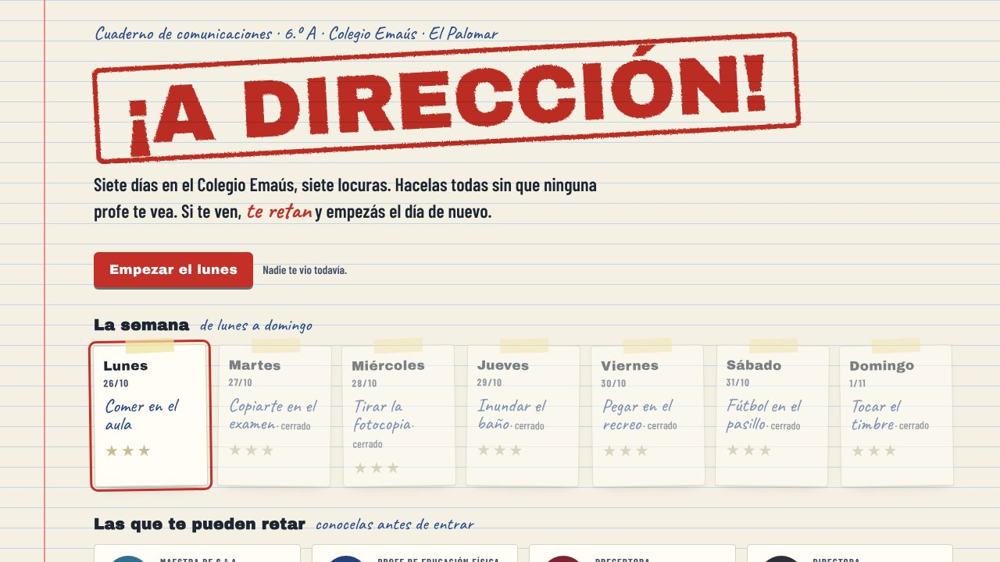

Instalarlo como una app
- Tocá Jugar e instalar.
- En compu (Chrome o Edge): tocá el botón amarillo Instalar como app que aparece arriba a la derecha (o el ícono de instalar en la barra de direcciones).
- En Android (Chrome): menú ⋮ → Instalar app o Agregar a pantalla principal.
- En iPhone (Safari): botón Compartir → Agregar a inicio.
Se instala desde el navegador: no baja ningún archivo y no aparece ningún cartel de “editor desconocido”. Queda con su ícono, se abre en su propia ventana y funciona sin conexión.
Qué tiene
Carrera
De la B a Primera, Europa, copas, Selección y Mundial.
De la B a Primera, Europa, copas, Selección y Mundial.
Tu jugador
Cara con tu foto, peinados, tatuajes, botines y camisetas propias.
Cara con tu foto, peinados, tatuajes, botines y camisetas propias.
Estadios
Cada club con su cancha, hinchada que canta y pasto en 3D.
Cada club con su cancha, hinchada que canta y pasto en 3D.
Fuera de la cancha
Prensa, celular con redes, galería de goles y tienda de ropa.
Prensa, celular con redes, galería de goles y tienda de ropa.
Otro juego: ¡A Dirección!

¡A DIRECCIÓN!
Siete días en el Colegio Emaús, siete travesuras. Hacelas todas sin que ninguna profe te vea: si te ven, te retan y empezás el día de nuevo. Es una app aparte, con su propio ícono.
… descargas
▶ Jugar e instalar
Clubes, marcas y jugadores inventados. Hecho por Tobías. Las descargas cuentan cada instalación como app y se actualizan solas.